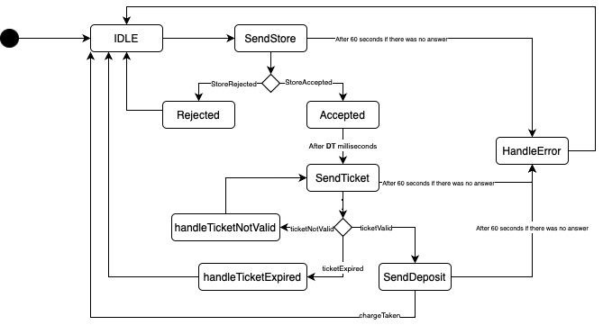

Introduction
Progetto finale di ISS, finalizzato allo sviluppo software di un magazzino refrigerato, nel
quale
vi è un robot che ha il compito di trasportare del cibo da un punto di partenza - chiamato INDOOR - alla cella
frigorifera.
Requirements
Work plan
- A partire dallo sprint0 analizzare il core business dell'applicazione
- Trovare ad analizzare eventuali criticità dei requisiti
- Implementare un MockTruck in modo da simulare un interazione del driver con la ServiceAccessGui, che interagisca con il ColdStorageService
- Implementare il ColdStorageService
- Implementare il TrasportTrolley e interfacciarlo con il BasicRobot
- Testing del sistema
- Aggregare le varie componenti in modo da creare un primo prototipo del sistema
Problem analysis
MockTruck
Obiettivo
Sviluppare un attore che simuli un driver che:- Richieda un Ticket
- Si rechi alla INDOOR
- Presenti il ticket al ColdStorageService e attenda la risposta
Problemi
Analizzando il testo dei requisiti possiamo dedurre i seguenti problemi:- La richiesta del ticket e la presentazione del ticket avvengono in istanti di tempo diversi Dall'esame dei requisiti forniti dal committente emerge che la richiesta di immagazzinamento del carico e la successiva presentazione del ticket all'INDOOR avvengono in momenti distinti.
- Scadenza del ticket Nel caso di accettazione della richiesta, viene fornito al conducente un ticket con un tempo limite entro il quale deve raggiungere l'INDOOR. Sorge quindi il dubbio se il conducente debba essere a conoscenza di tale scadenza.
- Problema del load-time lungo Quando il driver presenta il ticket è possibile che il ColdStorageService non riesca a fornire la risposta chargeTaken in tempi brevi, in quanto il TrasportTrolley potrebbe essere occupato, quindi il driver non saprebbe se la sua richiesta è in attesa di una risposta oppure se il ticket non è stato accettato.
- Errore interno del ColdStorageService Nel caso in cui il ColdStorageService incontri problemi interni che causano il malfunzionamento del servizio, è importante stabilire come il conducente dovrebbe reagire.
- Quando il driver deve liberare la indoor Il driver deve liberare la INDOOR appena "as soon as possible" cioè appena preso il carico, oppure deve aspettare che il carico sia stato scaricato all'interno della ColdRoom
Possibili soluzioni
- La richiesta del ticket e la presentazione del ticket avvengono in istanti di tempo diversi Il tempo in cui il driver si reca alla INDOOR non è trascurabile, di conseguenza è necessario introdurre una variabile DT (driver time) che rappresenta il tempo di viaggio.
- Scadenza del ticket Una possibile soluzione è fornire al conducente la scadenza del ticket e, supponendo che egli abbia una stima del tempo di viaggio verso l'INDOOR, consentirgli di valutare se intraprendere il viaggio. In alternativa, il conducente potrebbe ricevere solo il TICKETID e recarsi comunque all'INDOOR, dove la validità del ticket verrà verificata. Durante questa fase di sviluppo, è stata adottata la seconda opzione, ma ulteriori dettagli dal committente sono necessari.
- Problema del load-time lungo Per sopperire a questo problema è necessario creare un interazione a due fasi: una in cui il driver presenta il proprio ticket (sendTicket) e riceve una risposta da parte del ColdStorageService (ticketAccepted/ticketRejected); e una in cui il driver invia la richiesta di deposito (deposit) e riceve poi chargeTaken
- Errore interno del ColdStorageService È possibile introdurre un timeout per ogni richiesta, in modo che il driver abbandoni alla scadenza del timer. Il timer è stato fissato a 60 secondi.
- Quando il driver deve liberare la indoor In questa fase di sviluppo è stato adottato l'approccio "as soon as possible"
Architettura Logica

Project
MockTruck
Il MockTruck è stato modellato come un Attore Qak. Esso è composto da vari stati, i quali si ripetono ciclicamente per simulare l'interazione di un conducente con la ServiceAccessGUI.I messaggi di risposta del ticket sono stati modificati in ticketValid/ticketNotValid/ticketExpired.
Questo comportamento non implica la presenza di conducenti multipli, ma piuttosto di uno che cerca ciclicamente di effettuare un deposito. Di seguito è riportato il diagramma degli stati e il diagramma delle interazioni con il ColdStorageService.


Gli stati che rappresentano un rifiuto o un errore del sistema (Rejected, HandleError, handleTicketExpired) mostrano messaggi di errore e ritornano all'inizio ciclo.
Lo stato handleTicketNotValid stampa un messaggio di errore e riprova ad inserire di nuovo il ticket.
La transizione tra gli stati Accepted e SendTicket rappresenta il percorso che il conducente deve intraprendere per arrivare all'area INDOOR. Lo stato SendDeposit implementa l'approccio "as soon as possible" descritto nell'analisi del problema: appena il messaggio chargeTaken viene ricevuto, il conducente lascia l'area indoor. Prima di riprendere il ciclo, nello stato IDLE è presente una pausa.
Thread.sleep(Random.nextLong(1, 2001))Sono presenti tre variabili che vengono modificate ad ogni ciclo.
var FW = 0 var DT = 1000L var TICKETID = 0In particolare, le variabili FW e DT vengono inizializzate con valori casuali attraverso una funzione all'interno dello stato IDLE:
fun initDriver(){
FW = Random.nextInt(1, 101)
DT = Random.nextLong(1, 2001)
}
Invece la variabile TICKETID viene assegnata nello stato Accepted, prendendo il valore dalla risposta storeAccepted.
onMsg (storeAccepted : storeAccepted(TICKETID)){
[#
TICKETID = payloadArg(0).toInt()
#]
}